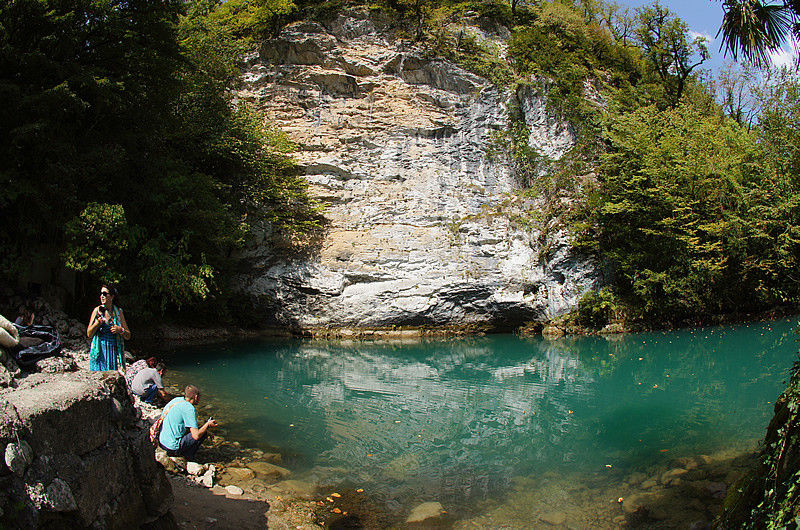
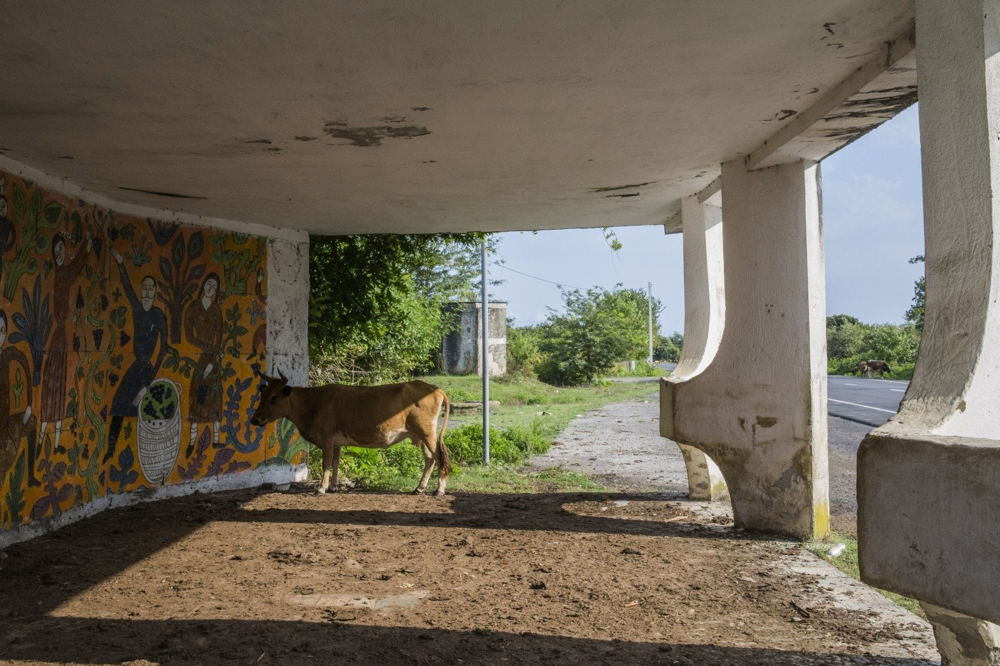
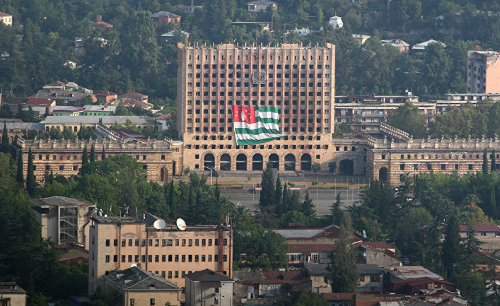
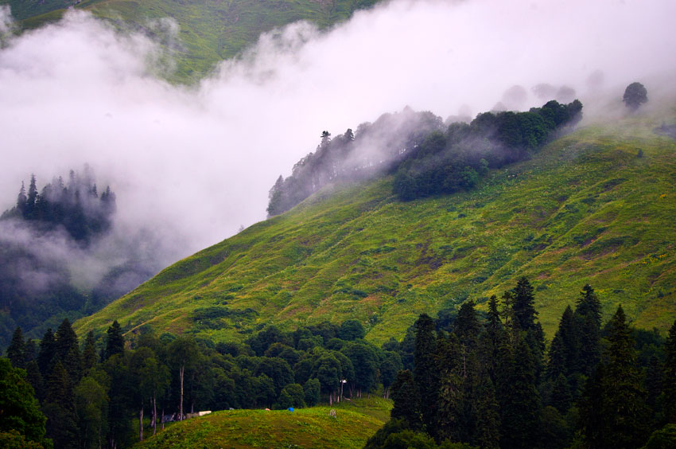

Бюджетное путешествие по Абхазии
Абхазия - это республика, расположенная в северо-западной части Закавказья между реками Псоу и Ингур на берегу Черного моря. Она находится на границе с Россией, поэтому добираться до нее можно на различных видах транспорта, начиная от машины и заканчивая авиаперелетами.

Сразу хочу предупредить, что Абхазия - это такой спокойный расслабляющий отдых без шоппингов и каких-то развлечений в парках аттракционов. Там просто этого нет. Из развлечений здесь только поездки на различные экскурсии. Но обо всем порядку.
Дорога и проживание. Данную поездку может позволить себе практически любая семья. Все зависит конечно же от предпочтений каждого. Мы выбирали самый популярный способ - поездка на поезде. Несколько лет назад РЖД запустили прямой поезд из Самары в Сухум и теперь туристам не нужно самим переходить границу и добираться на маршрутках или такси, можно спокойно пересечь границу, не выходя из поезда, и доехать до нужного города. Правда в таком варианте пересечения границы есть один минус - целый час сидеть в поезде без кондиционера на жаре. После такого опыта мы пришли к выводу, что лучше все-таки лететь на самолете в Сочи и своим ходом пересекать границу.
Поселиться в Абхазии можно как в пансионатах, которые остались там со времен СССР, так и в частном секторе. Цены конечно же в пансионатах будут дороже, а вот качество снимаемой комнаты не факт что будет лучше. Мы никогда в пансионатах не останавливались, предпочитая снимать комнату у частников. Но здесь нужно быть осторожным! Во-первых, никогда не ведитесь на предложения людей, которые ходят по поездам или стоят на пероннах вокзалов. Скорее всего обещанный вид на море из окон будет, но с высокого склона горы! Во-вторых, всегда перед путешествием имейте несколько вариантов для заселения. Не факт, что фотографии, которые вы увидели в интернете и обещанные 50м до пляжа окажутся реальностью. Ну и в-третьих, лучше все же ехать по рекомендациям друзей, которые уже отдыхали в Абхазии.
Питание. Здесь в кафешечках и ресторанчиках преобладает конечно же местная кухня. В Абхазии нет ни одной известной всемирной сети фастфуда! Есть конечно свои бургерные, но качество бургеров там конечно же не сравниться с российским. Поэтому за время отдыха лучше все же насладиться местными вкусностями. Цены в кафе очень даже приемлемые, а порции большие! Но понятное дело, что все еще зависит и от самого кафе. Стоит отметить, что обслуживающий персонал не такой обходительный как у нас. На просьбу разбить счет за столом на нескольких людей тебе могут напрямую отказать, а официант не всегда так быстро к тебе подходит. Но с этим нужно просто смириться. Это их такая национальная особенность. В целом по питанию могу сказать, что голодными в этой стране вы точно не останетесь, и даже привезете с собой потом пару лишних килограммов.
Экскурсии. Экскурсии в основном здесь проводят по каким-то природным достопримечательностям. Оно и правильно, потому что города после войны с Грузией до сих пор находятся в плачевном состоянии. А вот природа в отличие от городов здесь просто шикарная! Все зеленое, красивое, практически не тронутое человеком. Здесь есть несколько достопримечательностей, такие как озеро Рица, Голубое озеро, Новоафонская пещера, Гегский водопад и др. Цены у всех операторов одинаковые, поэтому выбирать можно любого. В основом все экскурсии расчитаны на полный день и включают в себя несколько дегустаций и обед с традиционной кухней Абхазии.
Море. Море в отличие от россиского побережья намного чище. Хотя с каждым годом и здесь ситуация немного ухудшается, но во всем виноваты одни лишь туристы, которые не заботятся об окружающей среде. Пляжи в основном из гальки, и вход в море не всегда пологий. Отдыхающие друг другу на пляже не мешают, места как правило хватает всем и нет какого-то чувства тесноты.
Общее впечатление. Я считаю, что отдых в Абхазии довольно таки хороший вариант. Здесь не так дорого как в Турции, много зелени, достаточно чистые пляжи и вкусная кухня. Поэтому если вы думаете куда поехать отдохнуть на море, то можете смело взять Абхазию себе на заметку как один из вариантов!
Комментарии:
Пользователь 1
Текст комментария